390 × 844 at 3×, light. 29 screens, captured 7/10/2026, 2:57:56 am.
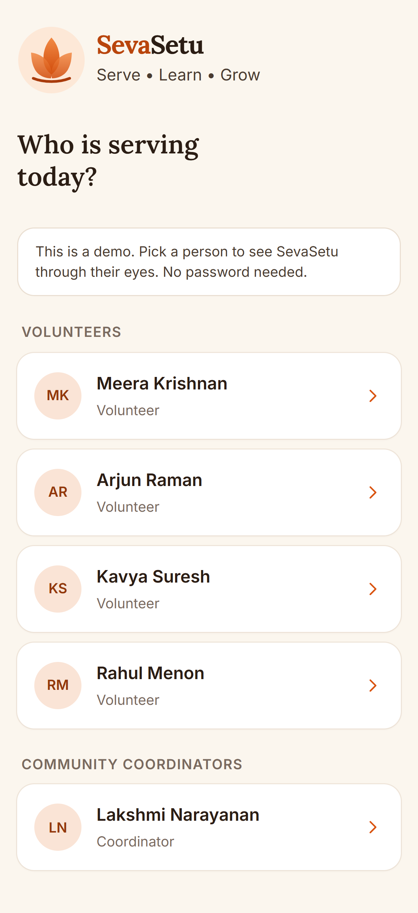
Login: pick a demo user 01-volunteer-login.png 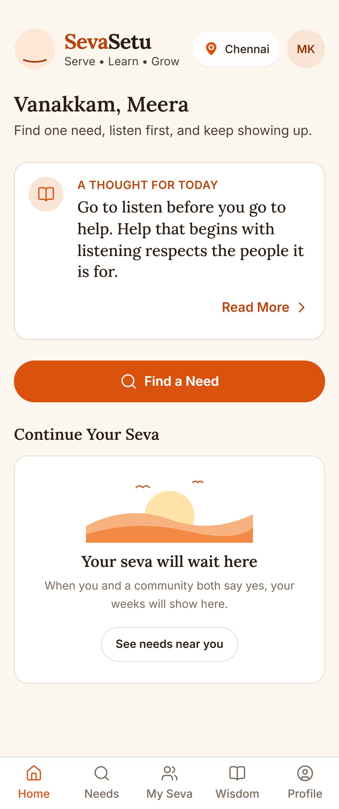
Home 02-volunteer-home.png 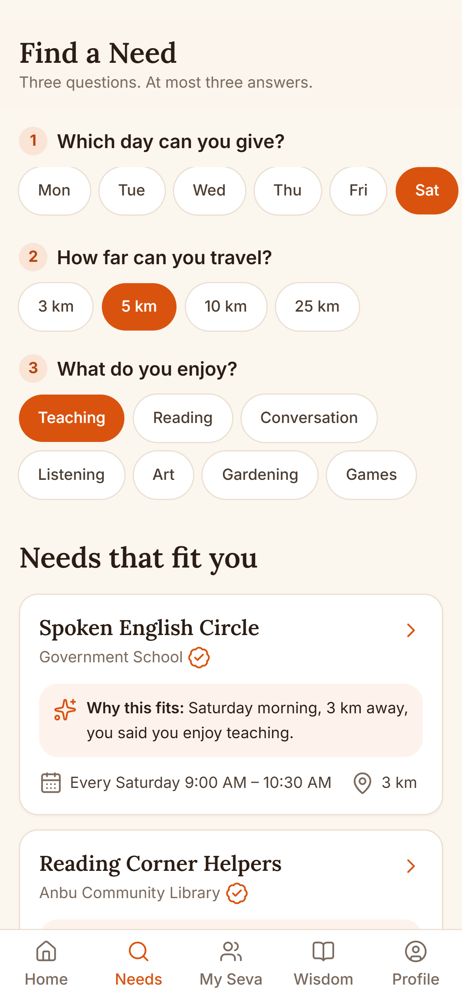
Needs: the three questions 03-volunteer-needs-questions.png 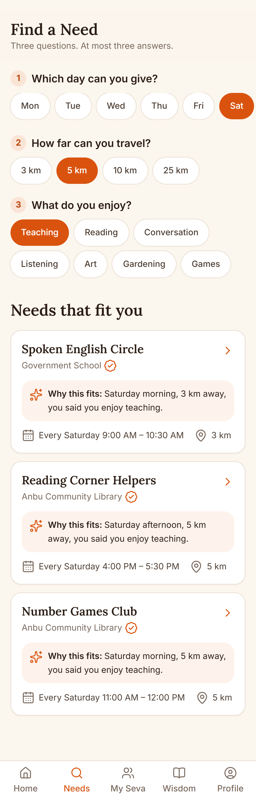
Needs: results with "why this fits you" 04-volunteer-needs-results.png 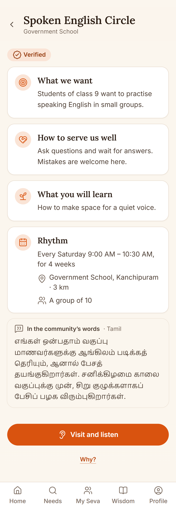
Need card 05-volunteer-need-card.png 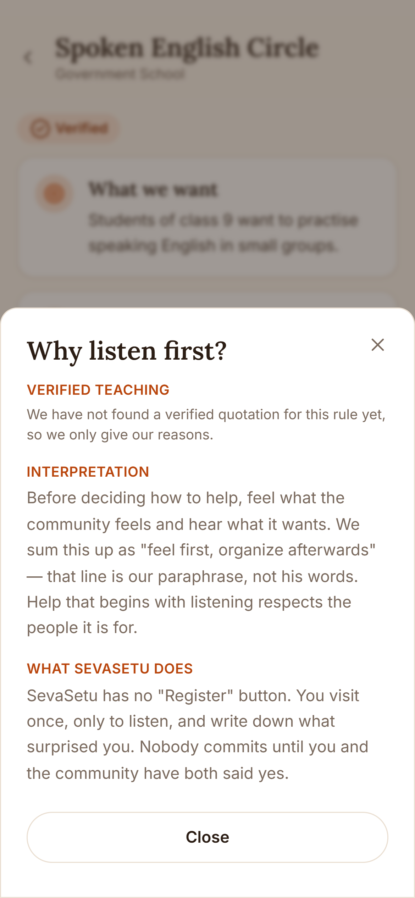
"Why?" sheet on the need card 06-volunteer-why-sheet.png 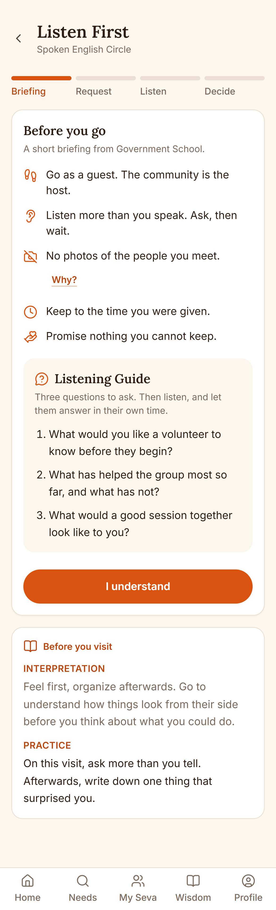
Listen First: guest briefing with the Listening Guide 07-volunteer-listen-briefing.png 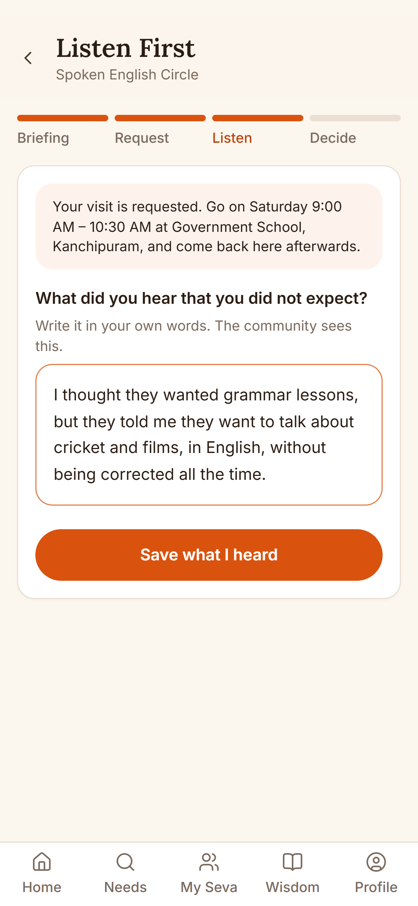
Listen First: "What did you hear?" filled in 08-volunteer-listen-heard.png 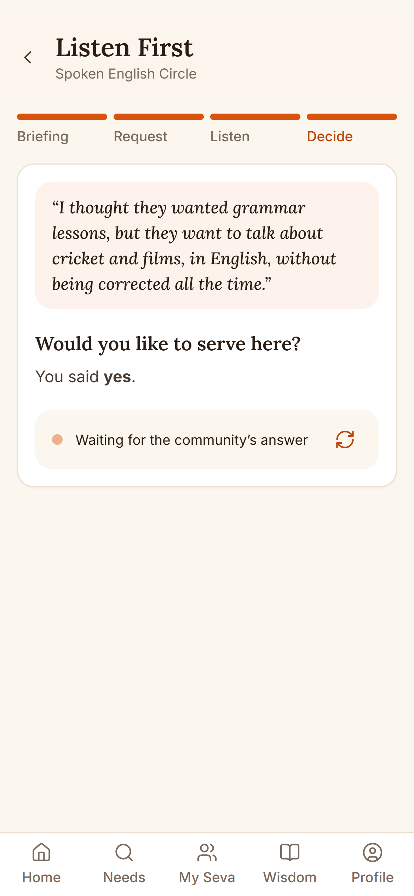
Listen First: waiting for the community’s answer 09-volunteer-listen-waiting.png 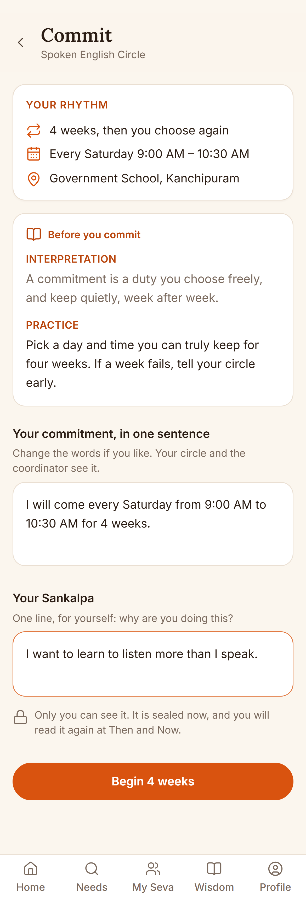
Commit: sentence and Sankalpa filled in 10-volunteer-commit.png 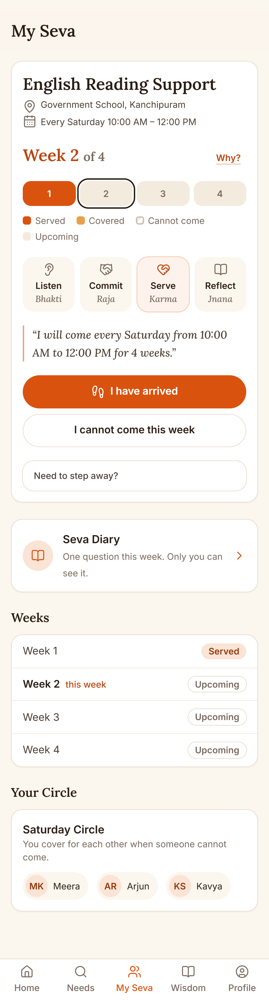
My Seva: week view with the four yogas and the circle 11-volunteer-my-seva.png 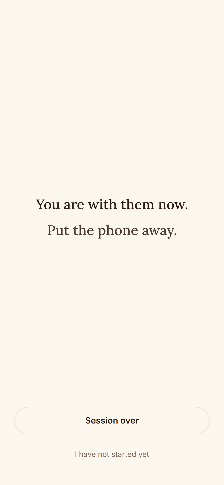
Silent Seva 12-volunteer-silent-seva.png 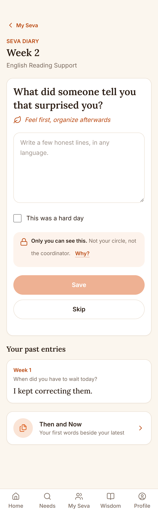
Diary: this week’s question 13-volunteer-diary.png 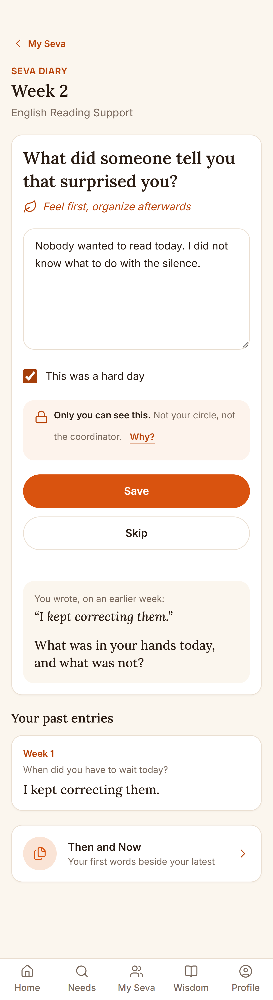
Diary: Hard Day mode 14-volunteer-diary-hard-day.png 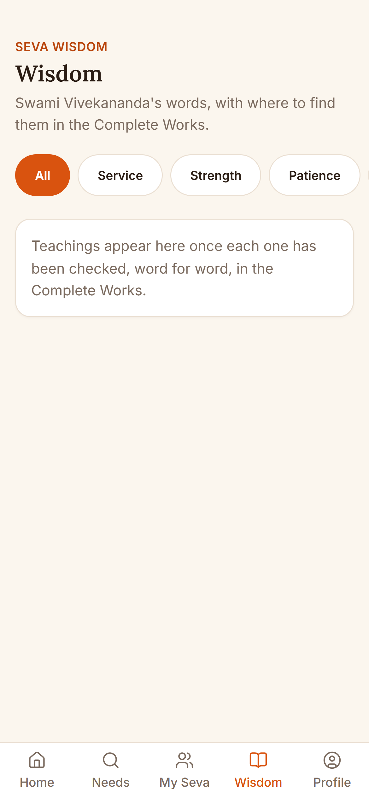
Wisdom tab 15-volunteer-wisdom.png Not captured
Teaching Finder with a result 16-volunteer-teaching-finder.png no quote in seed/wisdom.json is verified yet, so the Teaching Finder is hidden (by design) 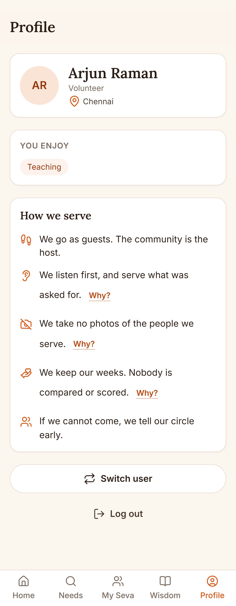
Profile 17-volunteer-profile.png 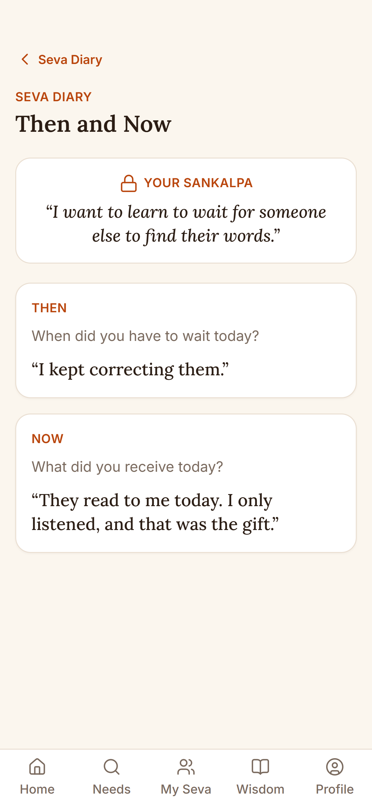
Then and Now, with the Sankalpa 18-volunteer-then-and-now.png 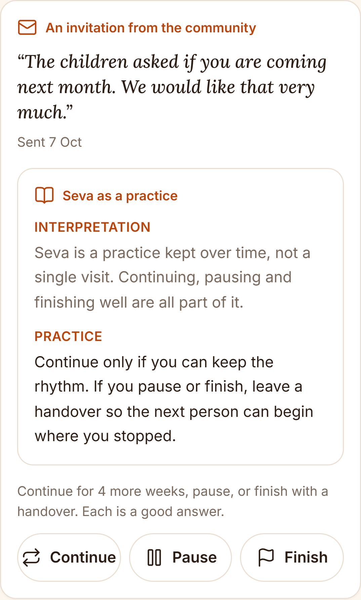
My Seva: the community’s invitation 19-volunteer-invitation.png